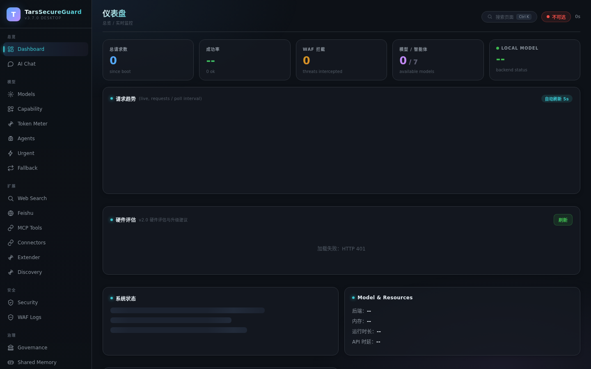
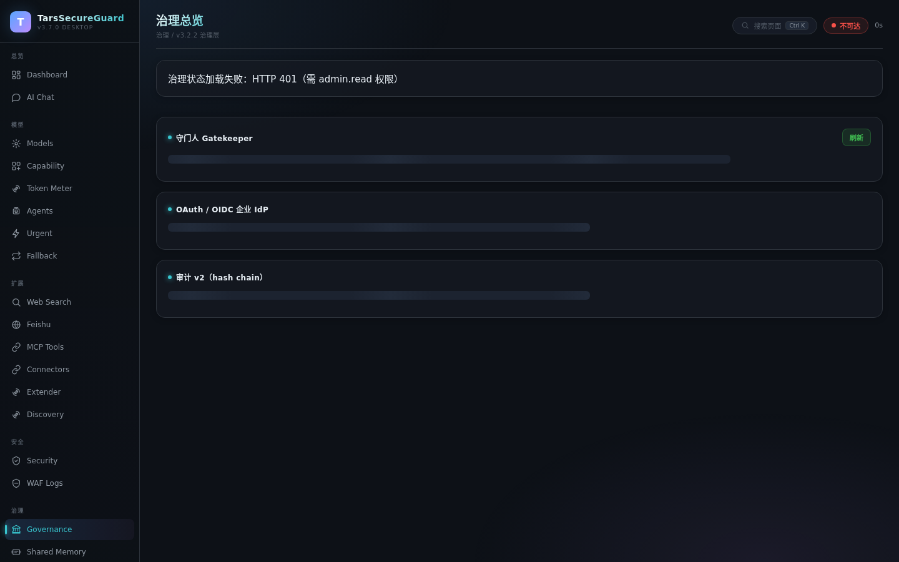
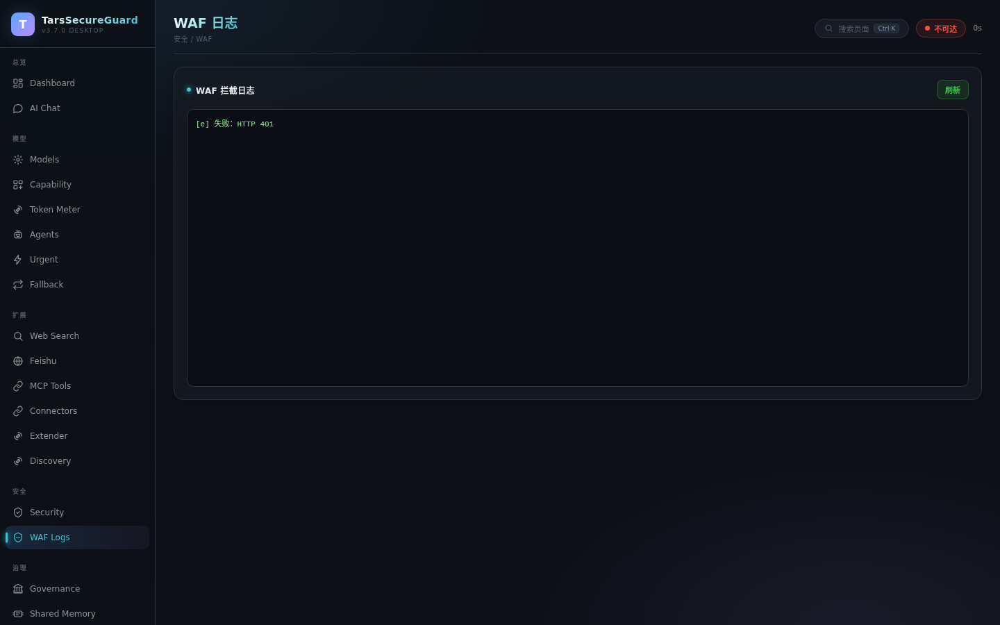
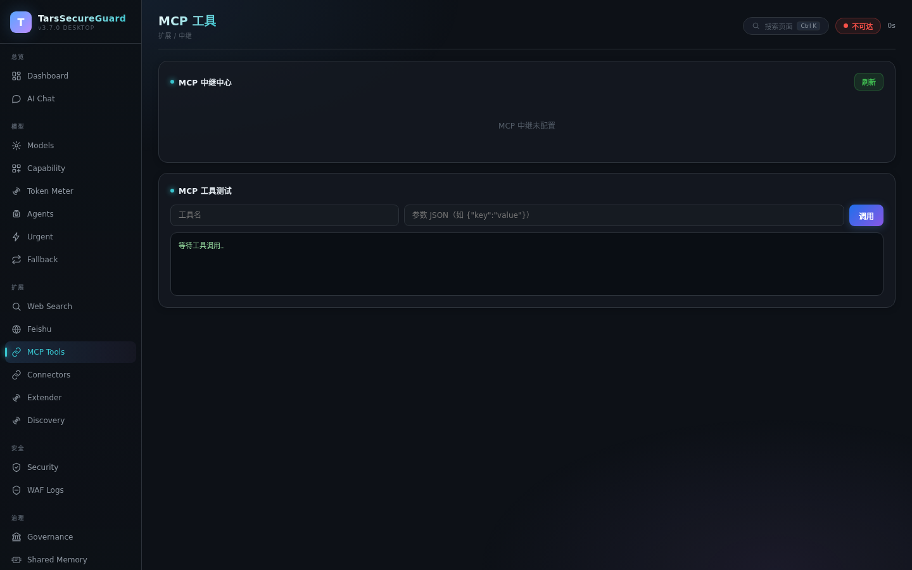

从 v3.3.0 到 v4.9.0，每一版都在拓宽 AI 网关的边界
动物分类学启发的新架构：12 节点 × 26 职业 × Token 策略，职责清晰、扩展无界。
v4.9.0并发语言探测引擎 + 语法树解析 + 语义评分，6 国语言实时切换。
v4.7.07 平台二进制（Linux/Darwin/Windows × amd64/arm64 + Android arm64），统一交付。
v4.6.0基准 harness + 回归基线 + 趋势看板：吞吐、延迟、资源占用、退化曲线一目了然。
v4.5.0分层加密 + 启动验证哨兵 + 透明加密 + 防内存转储，即使主机被控也有最后防线。
v4.4.0动态防护 + 静态防护双维度评分，安全水位可量化、可追踪、可告警。
v4.3.0纯 Go 交叉编译 arm64 + Kotlin 壳子 App，移动端也能跑本地网关。
v4.2.0Provider 多凭据故障转移 + 系统原生集成，连接更稳、切换更无感。
v4.1.0Crown Bus 总线 + 12 处理节点 + 26 职业角色，网关即微内核。
v4.0.0探测本机已装 AI 工具，一键生成接入配置，复制粘贴即完成。
v3.7.05 档裁剪档案一键切换，按需裁剪不背包袱；自适应建议引擎懂你习惯。
v3.5.0任意后端接入，统一 OpenAI 兼容格式；能力感知路由自动改道到适配模型。
v3.3.0Kingdom 7 层分类：从接入到守护，每一层都是可独立演进的防线
HTTP / stdio / MCP 三通道统一入口，OpenAI 兼容协议透传
路径穿越 / 命令注入 / SQLi / XSS / Prompt 注入 / PII 检测，合并正则 + 字节预筛
静态规则先行，灰区送本地小模型判定；fail-close 铁律——引擎不可用直接 503
限流 / IP 信誉 / RBAC / 守门人 / 审计哈希链 / PII 脱敏，动作级防线
静态规则兜底 + ε-greedy bandit 自动优选；成功率×时延融合 lm-eval 离线评测
OpenAI / Anthropic / Gemini / Ollama 四协议重建，多模态全链路适配
24 云端 + 8 本地运行时注册表，共享连接池复用率 98.5%，熔断降级自动恢复
L0-L3 分级响应：降级→熔断→优雅停机；RSS 口径捕捉内存泄漏，eco 省资源档自动套用
无论你是个人开发者、小团队还是企业，TSG 都能适配你的 AI 接入方式
中文界面、暗色主题、玻璃拟态——从仪表盘到治理页，开箱即优雅




不是「又一个网关」，是「AI 时代的路由器」
| 维度 | TSG | LiteLLM | Kong + AI 插件 |
|---|---|---|---|
| 部署成本 | 单文件零依赖 | Python 依赖栈 | PostgreSQL + 容器集群 |
| 安全链 | 8 层强制不可关闭 | 基础限速 | 需额外配置 WAF |
| 客户端配置 | Extender 一键配置 | 手动改 base_url | 手动改 base_url |
| 本地模型 | 8 运行时内置注册 | Ollama 为主 | 需自建适配 |
| 审计合规 | hash-chain 审计 v2 | 基础日志 | 需插件扩展 |
| 性能优化 | 连接池 98.5% 复用 + 缓存 | 基础连接复用 | 依赖上游 |
安装、升级、迁移、兼容性、安全——你关心的问题，这里都有答案
从 v3.2.0 到 v4.9.0，每一步都有迹可循
动物分类学架构：12 节点 × 26 职业 × Token 策略
并发语言探测引擎 + 语法树解析 + 语义评分，6 国语言
7 平台二进制全覆盖，统一交付
基准 harness + 回归基线 + 趋势看板
分层加密 + 启动验证哨兵 + 防内存转储
动态 + 静态双维度安全性能评价系统
纯 Go 交叉编译 arm64 + Kotlin 壳子 App
Provider 多凭据故障转移 + 系统原生集成
Crown Bus + 12 节点 + 26 职业 + Token 策略
AI 工具探测 + 接入片段生成，定位「路由器与配置器」
共享记忆 / 审计哈希链 / WAF 预筛 / 治理可视化
从「安全网关」到「AI 时代的路由器」，TSG 的进化从未停止
项目初衷：让每一次 AI 调用都自带安全带，让每一款 AI 工具都能零配置接入。
当前规模：v4.9.0 覆盖 32+ 模型提供商、13 种 AI 客户端、7 平台二进制、8 层安全链、0 第三方依赖。
路线图：持续深耕「连接 + 安全 + 性能」三角，下一里程碑聚焦智能化治理与开箱即用体验。